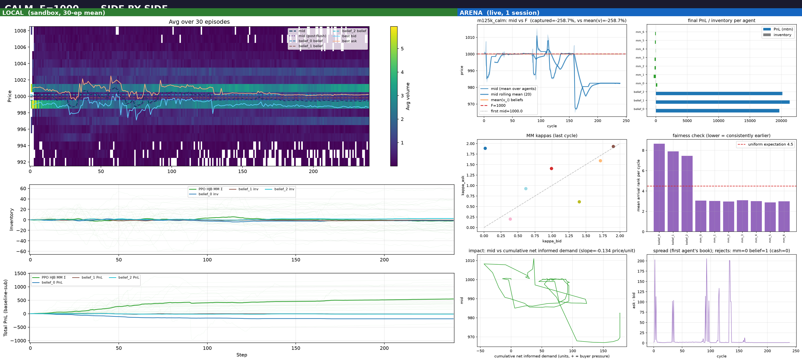
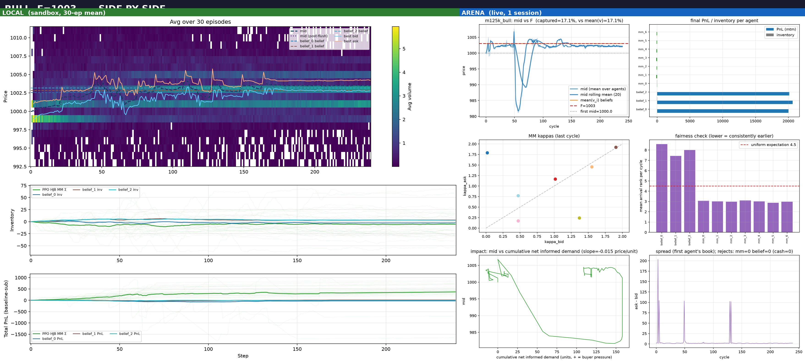
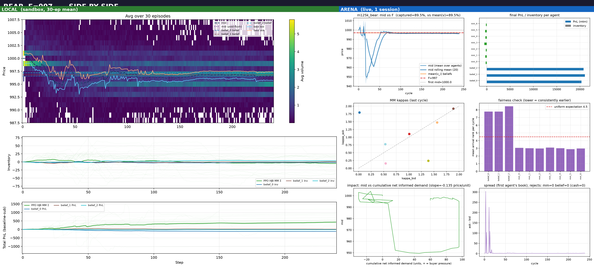
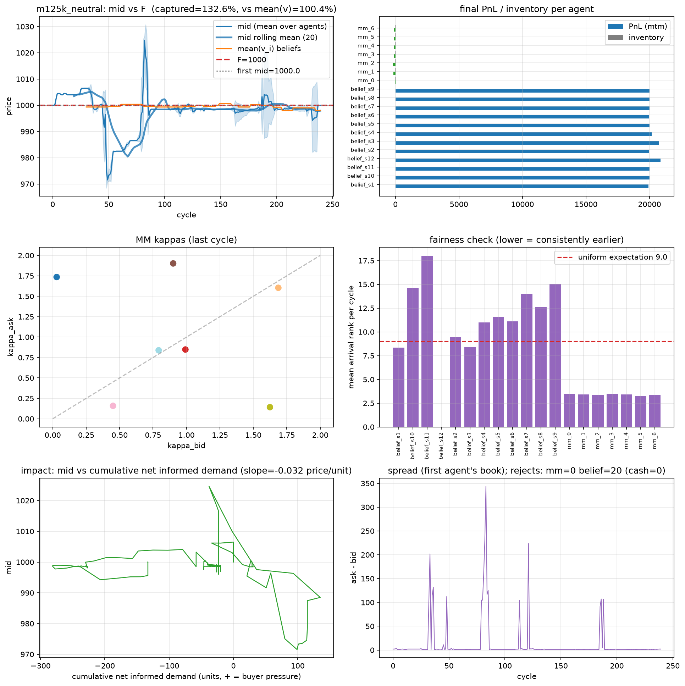

How to read this: sandbox = 30 independent episodes (a distribution); arena = 1 session per scenario (a single draw). Comparing a single draw to the mean line is invalid; the draw must be compared to the distribution (z-score / percentile / envelope).
| scenario | sandbox mean ± std | sandbox [p5, p95] | arena run2 end | z | percentile | verdict |
|---|---|---|---|---|---|---|
| calm (F=1000) | 999.40 ± 3.62 | [996.0, 1002.5] | 982.5 | −4.66 | 3% | tail draw (sandbox min = 982.5) |
| bull (F=1003) | 1003.47 ± 3.98 | [1000.0, 1013.5] | 1002.2 | −0.37 | 47% | consistent |
| bear (F=997) | 996.57 ± 2.16 | [994.0, 1000.0] | 996.0 | −0.26 | 53% | consistent |
Arena run1 (previous chain): calm 1000.07 (z=+0.19), bull 1002.17, bear 997.65 — all central. Two calm arena draws (1000.07, 982.5) straddle the sandbox distribution.
Per-tick envelope coverage (fraction of arena mid ticks inside the sandbox per-tick p5–p95 band): calm 50%, bull 91%, bear 88%.
| mid_std / ret_std | calm | bull | bear |
|---|---|---|---|
| sandbox 30-ep mean line (local plots) | 0.46 / 0.19 | 0.95 / 0.24 | 0.97 / 0.21 |
| sandbox single episode | 1.98 / 0.71 | 2.08 / 0.74 | 2.57 / 0.91 |
| arena session | 9.8 / 3.36 | 4.35 / 1.25 | 10.3 / 2.76 |
| arena | sandbox | |
|---|---|---|
| median |Δmid| per tick | 0.0 | 0.0 |
| ticks with jump ≥ 5 | 3.75% (calm) | 0.26% |
| empty one-sided book | 8/240 cycles (calm) | 0/7200 (never) |
Baseline tick noise is identical; the arena's excess volatility is rare glitch jumps: async cancel+repost on jittered 1s clocks leaves the book momentarily one-sided (ask=0), the observed mid collapses, and the MMs' observed-mid anchoring re-quotes around the glitched mid. Verified in the calm c160–166 logs (1000.5 → 966 → 969 in 6 cycles, no sell flow). The sandbox executes synchronously per tick, so this never happens there.
Left = LOCAL (sandbox 30-ep mean), right = ARENA (live, run2). Remember: left is an average of 30 episodes, right is one realization — compare against the distribution above, not visually.




Generated 2026-08-24. Numbers from results_matched_7x3_g99_ckpt125000_* (30 eps/scenario) and runs/m125k_*_live (arena 47–50).